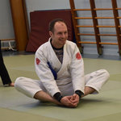

Evert Visseren
Geboortedatum: 13 Jul 1984Ik ben ongeveer in het jaar 2000 begonnen met jiu-jitsu op de sportschool van Aad van Polanen. Zodra ik mijn studie begon in 2003 ben ik op het sportcentrum gaan trainen, met inmiddels een bruine band om mijn buik. Het plan is om in juni 2008 mijn zwarte band te halen.
Ik vul de jiu-jitsutrainingen aan met kickboksen en judo op het sportcentrum. Ik overweeg ook om een nieuw jiu-jitsukata te ontwerpen. Het saru-no-kata (kata van de aap), met daarin de uit Lemmy's bekende 'klim over Gideon heen'-serie. Ik ben van mening dat er in het jiu-jitsu te weinig over mensen heen wordt geklommen. Dat is een technisch hiaat dat natuurlijk gedicht moet worden.
Laatst gewijzigd op 14 Jun 2014
2e dan
Behaald op 14 Jun 2008